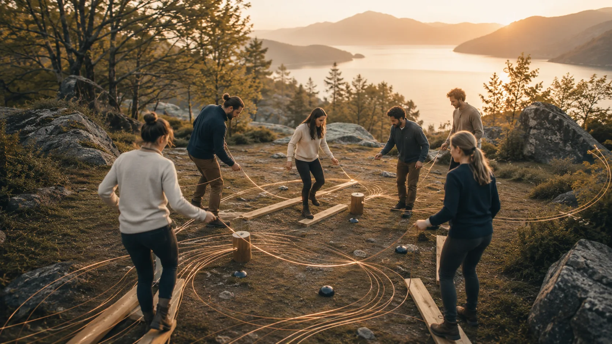

Atelier
Atelier de coopération
Un format collectif à construire autour des situations, des interactions et des pratiques de l'équipe.
Voir la ficheACCOMPAGNEMENTS NORIA
Faire travailler les collectifs sur des situations réelles et passer de l'échange à l'action.
EXPLORER LES PROPOSITIONS
Chaque fiche présente les bénéfices, le format et le parcours de contact. Les périmètres et conditions restent à valider avant publication.
Un format collectif à construire autour des situations, des interactions et des pratiques de l'équipe.
Voir la fiche
Un atelier expérientiel pour pratiquer des échanges utiles et ajuster les habitudes relationnelles.
Voir la fiche